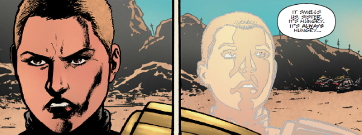

Corann & Lesley Ryan are psi-powered twins who, when we first meet them as young girls, are being used as part of an East-Meg terrorist plot masterminded by Orlok. They are rescued by Judge Anderson and inducted into the Academy of Law but Lesley dies during a botched Justice Department action to stop a mass of children from leaving the city. Corann becomes a fully-fledged Psi-Judge, still in contact with the spirit of her dead sister.
Art by Patrick Goddard & Pippa Bowland
| Story Title | Parts | Pages | w indicates a wraparound coverCovers | Year(s) | Issues | Writer | Artist | Colourist | Letterer |
|---|---|---|---|---|---|---|---|---|---|
From Anderson Psi DivisionTriad | 10 | 50 | 643: Mick Austin 1 | 1989 | 635-644 | Alan Grant | Arthur Ranson | [b&w] | Steve Potter |
From Anderson Psi DivisionThe Witch? Report | 1 | 8 | Arthur Ranson 1 | 1992 | M2.14 | Alan Grant | Arthur Ranson | <-- | Annie Parkhouse |
From Anderson Psi DivisionCrusade | 12 | 72 | 1053: Jason Brashill 1057: Dermot Power 2 | 1997 | 1050-1061 | Alan Grant | Steve Sampson | <-- | Steve Potter |
From Anderson Psi DivisionThe Dead Run | 5 | 45 | 410: Mike Dowling 414: Dylan Teague 2 | 2019 | M410-M414 | Maura McHugh | Patrick Goddard | Pippa Bowland | Annie Parkhouse |
From Anderson Psi DivisionAll Will Be Judged | 1 | 10 | 0 | 2021 | SFS26 | Maura McHugh | Anna Morozova | Pippa Bowland | Jim Campbell |
From Anderson Psi DivisionBe Psi-ing You | 1 | 10 | 0 | 2021 | 2250 | Maura McHugh | Lee Carter | <-- | Jim Campbell |
| year | episodes | pages |
| 1987 | 0 | 0 |
| 1988 | 0 | 0 |
| 1989 | 10 | 50 |
| 1990 | 0 | 0 |
| 1991 | 0 | 0 |
| 1992 | 1 | 8 |
| 1993 | 0 | 0 |
| 1994 | 0 | 0 |
| 1995 | 0 | 0 |
| 1996 | 0 | 0 |
| 1997 | 12 | 72 |
| 1998 | 0 | 0 |
| 1999 | 0 | 0 |
| 2000 | 0 | 0 |
| 2001 | 0 | 0 |
| 2002 | 0 | 0 |
| 2003 | 0 | 0 |
| 2004 | 0 | 0 |
| 2005 | 0 | 0 |
| 2006 | 0 | 0 |
| 2007 | 0 | 0 |
| 2008 | 0 | 0 |
| 2009 | 0 | 0 |
| 2010 | 0 | 0 |
| 2011 | 0 | 0 |
| 2012 | 0 | 0 |
| 2013 | 0 | 0 |
| 2014 | 0 | 0 |
| 2015 | 0 | 0 |
| 2016 | 0 | 0 |
| 2017 | 0 | 0 |
| 2018 | 0 | 0 |
| 2019 | 5 | 45 |
| 2020 | 0 | 0 |
| 2021 | 2 | 20 |